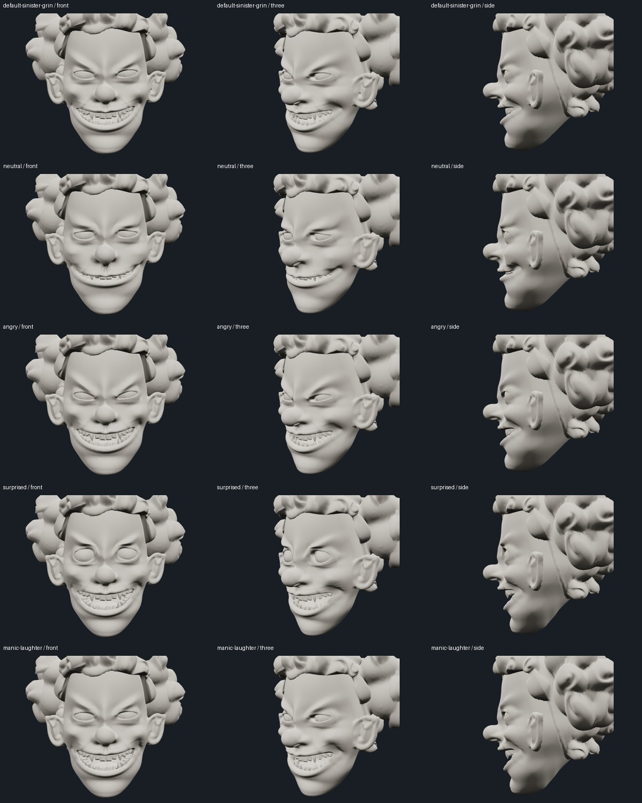

Original Candidate A skin and teeth; the protected jaw cage remains unchanged. Production FREAKSHOW is unchanged. The approved wide grin is the exact default and reset state.
Default sinister grin, Neutral, Angry, Surprised, and Manic laughter. Neutral reduces facial tension and tooth exposure; it is not a fully closed human neutral. Surprised uses raised brows, wider eyes, a 6° jaw opening, and mild rounding; it is not a pursed O. Manic laughter uses the largest previously inspected jaw opening, 6°.
Smirk, Snarl and Scream are retained as experimental targets, disabled and excluded from all automatic playback. Full lip closure, strong pursing and full blinking are excluded.
Kick, Snare, Clap, and Hi-hat / other buttons (or keys 1–4) trigger short eased gestures and return to the exact approved grin. Percussion rehearsal schedules these gestures; it does not listen to audio. The automatic expression cycle has varied transition and hold times. A new button press can interrupt an existing transition.
125 geometry samples: all enabled endpoints; 25%, 50% and 75% blends between every preset pair; gesture samples; individual control limits; and 48 deterministic combined-control samples. No invalid coordinates or triangle reversals relative to rest. Minimum signed area ratio: 0.3665. Original rest positions, normals, indices, and dental transforms restore exactly.
Actual endpoint renders below were inspected at matched front, three-quarter and profile cameras. The visible tooth escape from the rejected strong-rounding pose is absent in these enabled endpoint views. These checks do not constitute a proof of global self-intersection freedom for every possible continuous control combination.
Browser interaction checks passed for interruptible transitions, cycling, rapid gestures, percussion rehearsal, mobile-width preset interaction, and pixel-identical return to the default camera/rest state. No JavaScript or failed asset responses. The cloud software-rendered frame sample measured 41 ms median / 102 ms p95; this is not an iPhone hardware performance guarantee.
Geometry receipt · Browser receipt · Prior protected cage viewer
